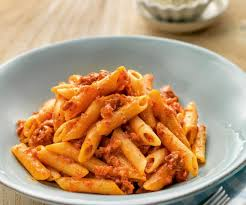

Pasta

Description
Pasta e fagioli, or just pasta fagioli. I knew—and loved—this dish years before I knew how to spell it. Growing up in New Jersey, pasta e fagioli is a
staple on every red sauce place's menu, along with spaghetti and meatballs, lasagna, alfredo and cannolis.
Pasta fagioli, aka pasta fazool (which is Neapolitan dialect for the standard Italian word for "beans"), is a peasant dish, a simple soup of pasta and beans
and veggies.
Ingredients
- 3 tablespoons extra virgin olive oil
- 1 cup chopped onion
- 1 large carrot, peeled and chopped
- 1 large celery stalk, chopped
- 2 large garlic cloves, minced
- 1/4 teaspoon chili flakes
Steps
- Sauté the vegetables. Heat the olive oil in a large pot over medium-high heat. Sauté the onion, carrot and celery for 2 to 3 minutes, until its soft and translucent. Add the garlic, chili flakes and Italian seasoning and sauté another minute.
- Add stock, tomatoes, pasta. Add the chicken stock and tomatoes and bring to a boil. Add the pasta and keep the soup at a strong simmer.
- Add beans, parsley. When the pasta is al dente, add the beans and cook another 2 to 3 minutes. Turn off the heat and stir in the parsley. Add salt and black pepper to taste.